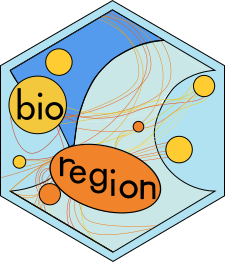
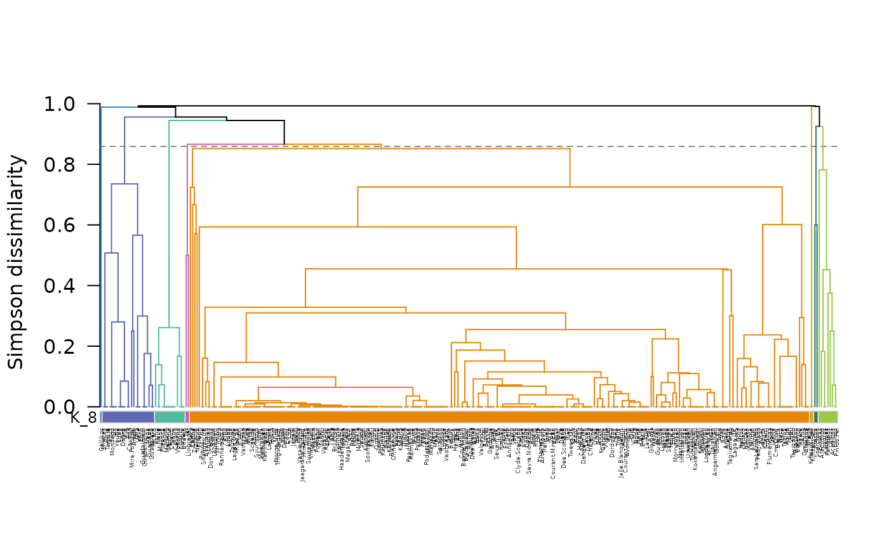
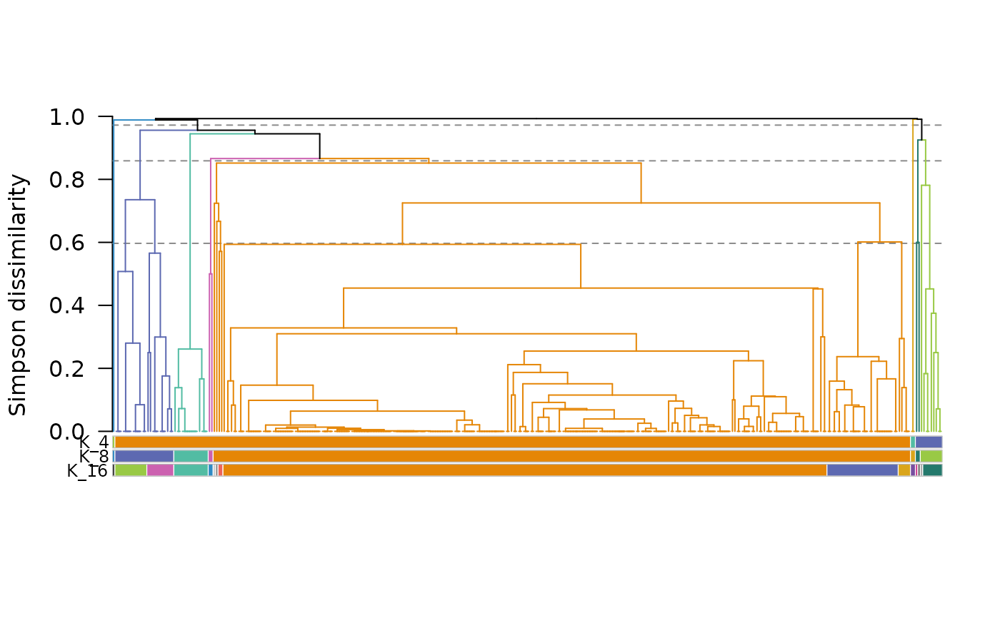
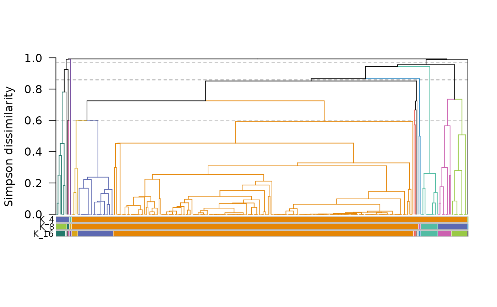
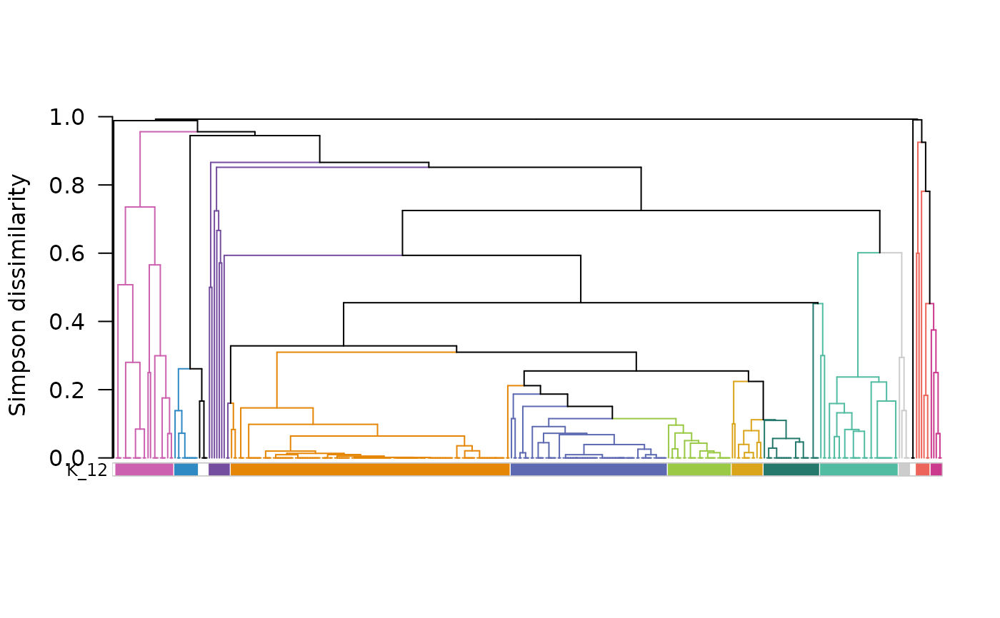
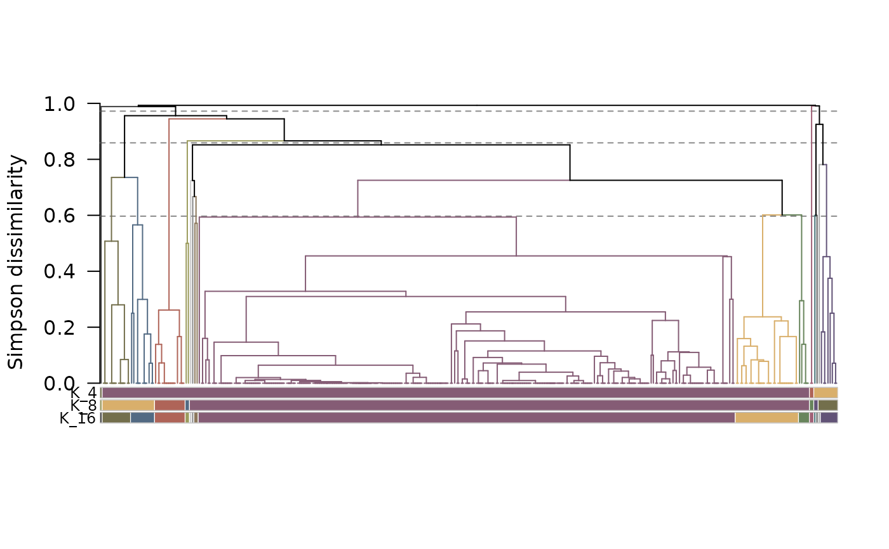
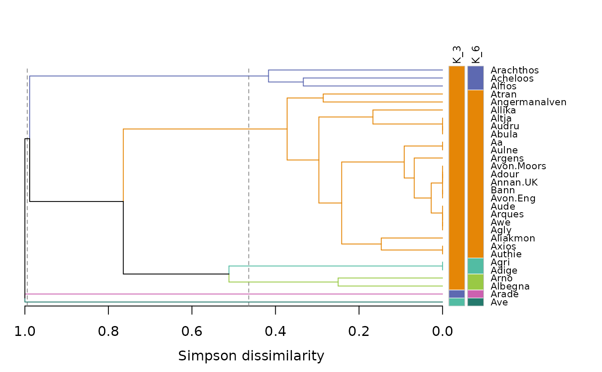

Plot a hierarchical clustering bioregionalization
Source:R/plot_bioregion_clusters.R
plot.bioregion.clusters.RdPlots the output of a clustering function. For hierarchical clustering
(hclu_hierarclust(), hclu_diana() and cut_tree()), the tree is drawn
with coloured bars under it showing the cluster of each site. Plots are not
available for the other clustering algorithms. Arguments starting with
tree_ apply to trees only.
Usage
# S3 method for class 'bioregion.clusters'
plot(
x,
tree_branch_partition = NULL,
tree_labels = TRUE,
tree_flip = FALSE,
tree_horizontal = FALSE,
...
)Arguments
- x
A
bioregion.clustersobject.- tree_branch_partition
Trees only. The partition whose clusters give their colours to the branches of the tree: either a partition number (
1for the first partition, as inmap_bioregions()) or the name of a partition (e.g.,"K_8"). By default (NULL), the finest partition (i.e. with the most clusters) is used.- tree_labels
Trees only. A
booleanindicating whether the site names should be written next to the bars (defaultTRUE).- tree_flip
Trees only. A
booleanindicating whether the order of the sites should be reversed, i.e., the tree drawn as in a mirror (defaultFALSE). The tree remains the same: only the two branches of each node are swapped.- tree_horizontal
Trees only. A
booleanindicating whether the tree should be drawn horizontally, with its root on the left and the sites on the right, which makes site names easier to read (defaultFALSE).- ...
Trees only. Further arguments passed to
graphics::text()to customize the site names (e.g.,cexto change their size).
Details
Tree plots (currently, only hclu_ functions)
The tree is drawn with one coloured bar for each partition (i.e., each cut
of the tree), from coarsest to finest cuts. Each bar is labelled with
the name of its partition. In each bar, the colour next to a site shows the
cluster of that site. Sites that were not assigned to any cluster (NA)
are left blank.
The branches that contain sites of a single cluster of
tree_branch_partition are drawn in the colour of that cluster. The other
branches, which join several clusters, are black. When the tree was cut at
given heights (or heights found for given numbers of clusters), dashed lines
show these heights.
With the dynamic tree cut (cut_tree(dynamic_tree_cut = TRUE)), the
clusters are not obtained by cutting the whole tree at a single height,
and a cluster is not always a whole branch of the tree: it can be made of
neighbouring sites hanging from different branches. With
dynamic_method = "hybrid", a cluster can even appear in several places
of the tree. The bars show these clusters as they are.
The colours are those stored in x by bioregion_colors(), so that the
tree and the maps made with map_bioregions() share the same colours. If
x has no colours, or if its colours do not match its partitions (e.g.,
after cutting the tree again), colours are assigned with
bioregion_colors() and its default parameters.
The site names are written in the bottom margin of the plot, or in its right
margin if tree_horizontal = TRUE. Long site names may not fit in it:
either reduce their size (e.g., cex = 0.5), enlarge the margin with
graphics::par() before plotting (e.g., par(mar = c(8, 4, 1, 1)), or
par(mar = c(4, 1, 4, 8)) for a horizontal tree), or remove them with
tree_labels = FALSE.
See also
For more details illustrated with a practical example, see the vignette: https://biorgeo.github.io/bioregion/articles/a4_1_hierarchical_clustering.html.
Associated functions: hclu_hierarclust cut_tree bioregion_colors map_bioregions
Author
Boris Leroy (leroy.boris@gmail.com)
Maxime Lenormand (maxime.lenormand@inrae.fr)
Pierre Denelle (pierre.denelle@gmail.com)
Examples
data(fishmat)
dissim <- dissimilarity(fishmat, metric = "Simpson")
# One partition
tree1 <- hclu_hierarclust(dissim, n_clust = 8,
optimal_tree_method = "best", verbose = FALSE)
plot(tree1, cex = 0.3)

# Several partitions, branches coloured with the partition with the fewest
# clusters (column 2 of tree2$clusters)
tree2 <- cut_tree(tree1, n_clust = c(4, 8, 16), verbose = FALSE)
plot(tree2, tree_branch_partition = 2, tree_labels = FALSE)

# Same tree, mirrored
plot(tree2, tree_flip = TRUE, tree_labels = FALSE)

# Dynamic tree cut
tree3 <- cut_tree(tree1, dynamic_tree_cut = TRUE, verbose = FALSE)
plot(tree3, tree_labels = FALSE)

# Same colours as on maps
tree3 <- bioregion_colors(tree2,
palette = "Antique")
plot(tree3, tree_labels = FALSE)

if (FALSE) { # \dontrun{
data(fishsf)
map_bioregions(tree3, fishsf)
} # }
# Horizontal tree, with room for the site names in the right margin
small_mat <- fishmat[1:30, ]
small_mat <- small_mat[, colSums(small_mat) > 0]
tree4 <- hclu_hierarclust(dissimilarity(small_mat, metric = "Simpson"),
n_clust = c(3, 6), optimal_tree_method = "best",
verbose = FALSE)
old_par <- par(mar = c(4, 1, 4, 7))
plot(tree4, tree_horizontal = TRUE, cex = 0.7)

par(old_par)